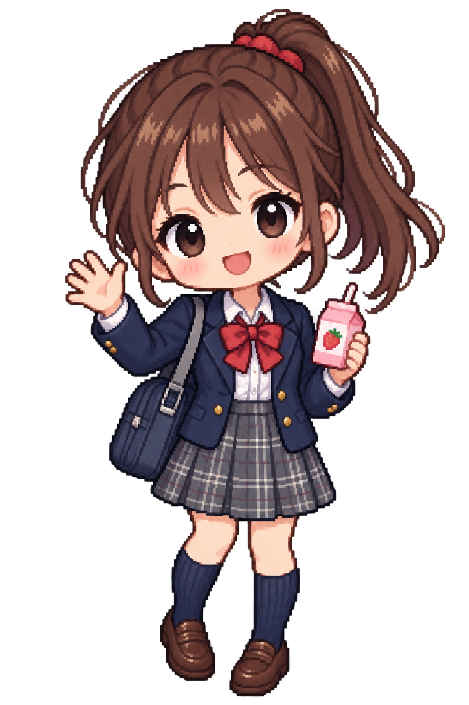

작은 픽셀 · 귀여운 2D 캐릭터
작은 픽셀로 섬세하게,
윤하나.
밝고 털털한 소꿉친구 · 고교 동창.
갈색 포니테일과 교복, 딸기우유.
귀여운 비율을 유지하고, 작은 픽셀로 머리카락과 교복을 섬세하게 표현했습니다.

작은 픽셀 · 귀여운 2D 캐릭터
밝고 털털한 소꿉친구 · 고교 동창.
갈색 포니테일과 교복, 딸기우유.
귀여운 비율을 유지하고, 작은 픽셀로 머리카락과 교복을 섬세하게 표현했습니다.